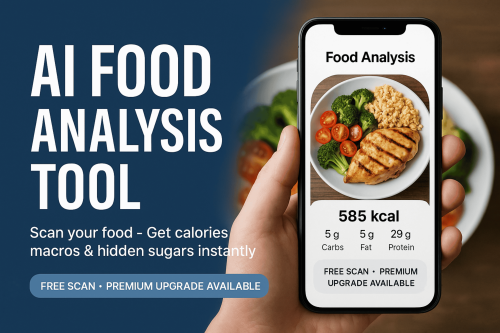

Food Analysis Tool – AI Nutrition Scanner with High Funnel
Product profile · Marketplace data 2026-10-09 · Sales-page research 2026-10-09 · Categories: Health & Fitness, Software

Marketplace record
| Product type | Software |
|---|---|
| Price | $97.32 (Subscription) |
| Affiliate commission | 50% |
| Refund window | Per the vendor's sales page — check the official page before buying |
| Vendor | goldinline (listed since 2025-08-27) |
| Marketplace stats* | Cart conversion — · cancel rate — · affiliate earnings/sale $48.66 |
* Vendor-side marketplace statistics reported by Digistore24; they depend on traffic quality and are not a forecast.
Vendor's marketplace description
50% Commission on a $27/month or $97/year software Commissions are monthly & yearly recurring for life! The BEST AI Food Analysis Tool to scan meals & reveal hidden calories, macros, and ingredients. Evergreen niche: weight loss, fitness, nutrition. Affiliates get banners, swipes, and proven funnels.Feel GREAT About Promoting!
From the vendor's sales page
Page title: Get Premium – Food Analyzer | Food Analyzer
Meta description: Unlock AI nutrition analysis, meal planning, and more.
Headline
You're not eating badly. You just don't know what's in your food.
Section headlines
- What Food Analyzer provides
- What's hiding in plain sight.
- What you get with Premium
- Your first scan shows the problem.
- Start Premium today.
- Refund & Support
Opening copy
Unlock Premium You're not eating badly. You just don't know what's in your food. Food Analyzer scans your meal in seconds, reveals hidden nutrition problems, and helps you make smarter food choices with confidence.
What you're getting An AI-powered food scanner that analyzes your meal in seconds, flags hidden issues, scores it clearly, and suggests smarter alternatives. You don't need to be a nutritionist.
60-day money-back guarantee Get the full toolkit. Meal planning, recipe generation, macro tracking, and more.
Prices mentioned on the page: $10 · $87
Guarantee language found: “60” — always confirm the current terms on the official page before relying on it.
Research method: raw HTML fetch · 1102 words on page · quality: rich · researched 2026-10-09. Full research file (MD) ↗
Where to check it out
Read the vendor's full sales page (current price, guarantee terms and bonuses are listed there):
View official sales page
That link is an affiliate link — if you buy through it we earn a commission from the vendor at no extra cost to you.